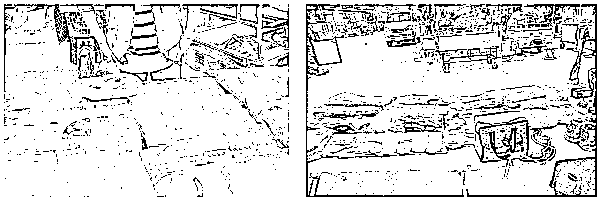
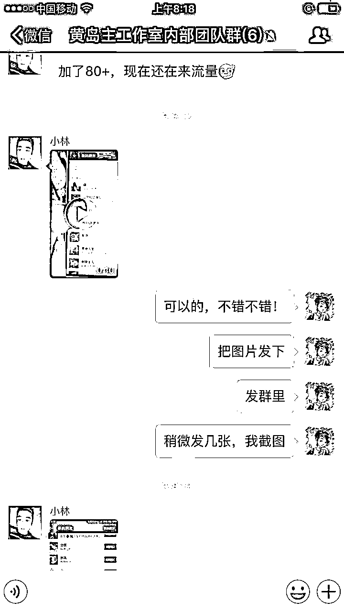
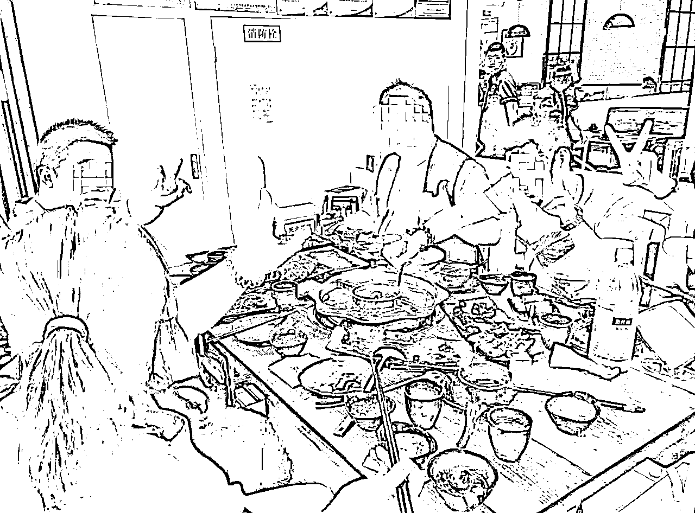
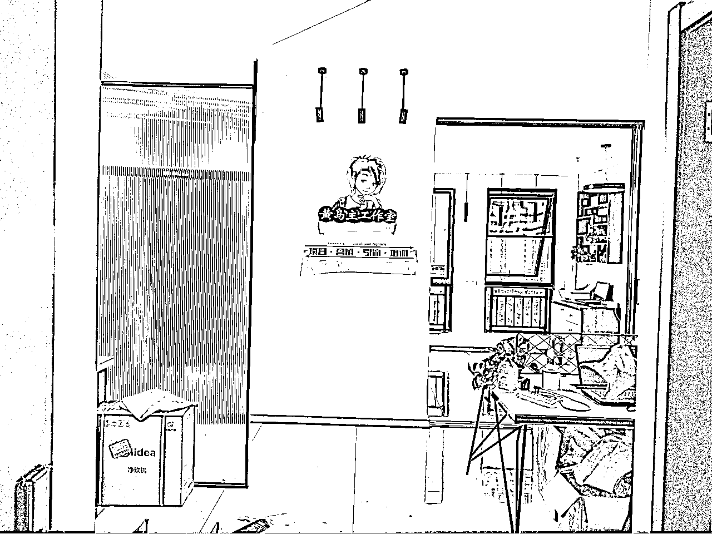

来源：https://o0yvn3o31a.feishu.cn/docx/RJm2djA9iouzrpxvieVc5p59n4g
大家好，我是黄岛主！
今天写一篇关于我这些年创业前后的故事，可以说是从悲惨人生到活出属于自己人生的一段历程。当然，写这个还有一个原因，就是现在的00后不论是打工还是创业都是非常浮躁的，跟我们90后那代人相比，确实有点那啥。所以也想着让大家看看我们这代人创业时候的一些背后心酸。
首先，我并不是什么成功人士，我只是创业时间长一点、经验多一点、遇到的坑多一点、遇到的事情多一点、经历的大小事情多一点，仅此而已！也可以说你们经历的我都经历过，你们没经历的我也经历过的。所以，一些创业经验可以借鉴给你们看下！
那么我是从16年5月份开始学习创业的，17年回徐州开始正式创业的。而16年之前是在网络公司按部就班的上班，10年之前我是混非主流家族的，同时也是一位叛逆的小伙子。经验上没得说，所以我觉得我可以帮助一些想创业或者想往互联网上变现的新人。
好，下面我具体跟大家聊一下我的故事，希望对大家有所帮助！
时间线跟大家缕下：初中→社会→培训机构→工作→开除→创业→现在→活出自己想要的人生
05的时候，我从小学升到了初一，那个时候的我对学习充满了无限的好感，但奈何我生活在农村，在农村的初中时代，可以说你不想叛逆都由不得你。一开始的时候没什么问题，每天就是就是正常的学习，后来开始有人看你不顺眼，开始去霸凌你，然后我整个人的心态就变了。后来还有老师看你不顺眼去叫你干杂物，或者老师遇到不顺心的事情把你喊出来揍你一顿。
我印象最深的2件事是：有个英语老师每次上课的时候都会让我去给她拿水壶去接水，还有班主任看到你调皮之后，隔三差五的让我去捡瓶子，积累到一定程度的时候然后去学校外面卖掉，最后钱就上缴当班费了。可能你们没经历过，但这确实是我们这些调皮孩子所经历的。可以说，整个初一的经历改变了我的人生轨迹。
升初二的时候，我整个人就是那种混子流氓类型的，同学老师都不喜欢我。没办法，很多时候你不做点事情引起别人的注意，都会觉得自己没有存在感。其实调皮不是本性，但不调皮一定没人知道你。后来到下学期开学没多久，喜欢上了一个初一的小姑娘，写封情书回个信都一堆人抢着去看。
再后来，我叛逆到了极致，真的是每天厌学、谈恋爱、打架，确实上不了然后辍学回家呆着。呆着也不是办法，家里人和亲戚邻居看到了，就会说我没出息，这么小就不上学，还染着黄毛，就差刺青了。然后村子里不让小孩跟我一起玩，当面说我没吊用。这时候的我已经很悲惨了，真的是别人看不起你会一直看不起你，是那种骨子里的看不起，无论你以后混的多有出息，开着豪车回家探亲，别人也照样看不起你。
主要看不起其实是我家里很穷，这是我当年还在老家住的时候拍摄的（现在已经被我重新盖成了小别墅）：
我初中那个时候连窗帘都没有，这是后来我妈花钱弄的一个窗帘。其实家里穷有个好处，就是比有钱人家庭的小孩学会早奋斗。昨天我带着媳妇回老家探亲的时候，遇到了我一个同学，看穿着应该是在电子厂上班。我跟我媳妇说，都说初中是一个分水岭，确实这话是有道理的！
我辍学的那段时间里，大部分时间都在街里网吧度过的，那个时候村子里的网吧也没什么实名上网，给钱就可以上网的，基本上我每天就是砍私服、玩跑跑卡丁车，上的我每天都浑浑噩噩，也不知道自己的理想是什么，也瘦了很多。后来，我偶然接触到了QQ空间设计这块，然后对flash动画和平面设计比较感兴趣，然后加入了非主流的残血家族，类似我们现在的社群，从那之后整个人变了。
备注：这里不要笑话我少年的时候是非主流，因为那个年代就是这样的，只是你没接触到这块而已。包括现在还有很多人看我直播的时候还说我的发型太非主流了。其实我想说，我留着发型只是让我不忘本，我忘不掉过去悲惨的生活！
不过我当时在家族里混的也是风生水起，因为自学平面设计比较厉害嘛，那会用的网名叫冰爱设计师，也就是现在大家所说的个人IP，而且定期在家族网站上投稿自己设计的作品，然后引流到QQ上在变现，也就是现在的引流嘛，我记得那个时候QB都不缺，赚到的都是低价卖给需要的人，如果不收QB就收人家买的电话卡，那会可以在支付宝上充值成人民币。
其实说真的，一个时代流行一个东西，QQ空间4.0版本是05年就开始有了，以前最流行的时候就是卖QCC，这个也就是腾讯默认的，后来取消掉之后升级到5.0版本，大家开始都去搞FD模块，然后到6.0的皮肤等。当时我玩这个还是很6的，网吧里、学校里都有人找我去代做QQ空间。最终吧，还是要从个人IP出发。
后来，升初三的时候，我感觉我的人生不能这样，我那个时候其实内心里已经在慢慢转变思想了，然后我找家里人又重新去上学的，没留级而是继续跟着初三上，其实也有一部分是因为爱情去继续上学的。但是上了一段时间跟老师吵架，一气之下又不上了。回到社会上开始找兼职去干了，这个时候的我发过传单、去饭店洗过盘子也当过传菜员。虽然生活不如意，但是我觉得还可以。但是总会后悔的，时间一长内心总会发生一些变化的。
当时我初三上学期不上学的时候，还去过我们这边食品城做油炸食品，但由于年轻气盛，做了一段时间被人家排斥在外。后来发现初恋跟人家跑了，整个人惨到了人生的谷底，觉得做啥都没意思了，我也不知道什么是真什么是假了。因为这个我还去学校跟人家打了一架，后来被有关部门带走教育了....
可能人生就是这样，我在不上学的时候整个想法就改变了，我要上完最后半学期然后学个技术，然后找找关系继续上学了。接着就是漫长的学习之路，只可惜我这个时候已经是穷途末路，学什么都学不会，复习的内容也不会，熬到毕业后，我彻底结束初中时代。
当时毕业后还差点去新华电脑学校学习，但是我没去。后来我在社会上呆了两年，无意间在网上了解到了北大青鸟，然后让我爸爸带着我去了解了下，没问题就交了学费入学了。其实那个时候的我很喜欢平面设计和研究电脑主机，对我们来说这就是新颖的东西。
但我发现我不太适合在北大青鸟学习，因为学的时候要懂英语，我初中英语基本上没学什么，所以学起来很费劲，而且学费超级贵，家里都是借钱给我学的，我还因为第二学期没钱上学跟我爸吵了一架，后来还是借钱上的。而且上学的过程中也是如履薄冰，每周100块钱生活费，吃饭什么的都很拮据，有时候为了省钱一天只吃一顿饭，后来变得很瘦少，身体发育比别人差了点。
但是这学没白上，一段时间后我彻底幡然悔悟，因为教室后墙上的一句话（教育改变生活）让我从此开启奋斗的人生。然后每天就是学习，除了学习还是学习，把每个知识点都一点点的学会。不过我感觉我学计算器还是很有天赋的，linux系统这么难的我都可以学会.....
也归功于北大青鸟的几个好朋友吧，他们都是高中毕业，很多都可以请教别人。这里说下，我是没上过高中也没上过大学的，但是我那一个班的同学基本上高中毕业，就我和另外一个同学是初中毕业生的，这也让我体会到了上学的好处。所以，现在的10后要把握机会好好上学哈！
后来北大青鸟毕业之后，又面临着找工作的困境，因为太年轻了，没公司要我的。最后因为学校的HR帮忙给找了一份工作，但是我能力是突出的，基本上linux服务器从搭建到运营很小意思的，但是我工作了一段时间发现，做服务器维护和运营真不是人干的事情。后来我到了一家私立的医院做网站的服务器运营，同时也跟着去学习SEO，这也正是为我后来的SEO做了基础准备。
这期间，我从医疗学习SEO到企业不断应用SEO，然后在企业里不断的学习，就跟现在大家知识付费是一样的。然后我在学习的时候认识到了一家本地网络公司的SEO负责人，然后合作了一些SEO方面的业务，而且和对方很聊得来，在SEO上也给了我很多的帮助，我也是很感恩他！
后来我因为1700块工资太低去谈工资的时候，企业老板不给涨，然后我就直接离职了。离职之后，我直接去了前面说的这家网络公司上班了，工资也开到了2500左右，也当换个环节继续工作吧，反正都是做SEO，在哪做不是做，只是工资高低而已。而且换个环境也能给我自己带来很多的学习！
企业上班时候拍的：
其实后来我才知道，跳槽真的能让一个人不断积累知识点，如果年轻的时候总是在一个公司上班，那么会遭遇到两个情况，第一个是学习遇到瓶颈，第二个是工资涨幅度不高，每一次跳槽都可以去谈更高的工资，这是真的。但可惜的是，我后来才知道这样，后来我是见证了我女朋友这样一路过来的.....
当然，这也是我人生中的一个重要转折点，如果没有这个转折点，可能没有现在的我，因为我初期创业的时候，引流基本都通过SEO原理去做的。
说真的，在网络公司上班我还是很快乐的，至少前期我学习到了很多东西，见识到了很多新奇特，而且领导也非常栽培我，我也没让领导失望，遵循着戒骄戒躁并一步一个脚印把自己在SEO行业里做出了名声，那个时候一提我的名字基本上都知道，而且我在各大站长网上发布了很多篇SEO专业性的文章。
基本上我每天工作的时候都会在业余时间写一篇SEO实操文章去投稿各大站长网，我记得有一次放十月一假期，我整个假期在家摆地摊卖袜子补贴家用，这七天没有写文章，回到公司就被领导训斥了一顿，后来才知道，自己不去努力是没人去代替你去努力的。所以，从那之后不管是负责网站优化还是写文章积累人脉资源，我都是很上进心的。
卖袜子时候拍的，袜子是朋友工厂送来的，卖完在结算费用的：

从那之后，我在网络公司上班了四年之久，但是我过的并不快乐，每天都在勾心斗角，也不定时的跟部门人吵架，这让我每天都开心不起来！有次领导问我最近为什么都是不开心的表情，我其实想说出口的，但我只能说我最近有点不舒服。后来因为种种原因我决定辞职单干，也鼓起勇气跟领导谈了离职，最终就是带着资源下个月正式离职。
有句话说的好：翅膀硬了真的想到处飞一飞，世界这么大我想走出去看看。没错，创业的想法已经萌生了我很久了。当然，还有一点就是：我的工资每个月只有3000-3500这样，高点就4000+，让我生活上有点阻碍，看到工资高的同事都买房子了，我也想去买，但是全身上下不够首付。当时我谈个了对象，但是彩礼（山东）要20W，被逼无奈啊，我才彻底想出来单飞的。
虽然离职谈好了，但后来我做私活被同事举报了，然后领导当天用了小号加我，问我最近忙啥呢，说看了我写的很多文章觉得我不错，然后寒暄了一会就说认识我领导，说我做的还不错什么的，然后问我领导咋样？其实这个时候我说了一些大实话，然后就悲催了。后来才知道，嚼舌根是需要付出代价的！
然后周一去上班后，领导把做私活的证据什么的都打印了出来摆在了眼前，然后就罚款3W块钱，所有资源上缴，官网写了个通报把我开除了，这个等于被裸开了。其实吧，我觉得这个私活没什么，但是领导认为我在就职期间去做私活，如果不给罚款直接起诉我，那时候我胆小啊，吵完之后就把钱给了。然后回到办公室收拾东西就离开了这家让我工作五年的公司，那个时候公司里的人都不知道我走，一段时间不见我了，然后问我最近咋没上班的。
我离开公司那段时间，我整个人是懵逼且迷茫的，我在16年的3月份离职，到5月份都在家里待着，整个人面无表情，每天愁眉苦脸，以泪洗面，恨的那个同事牙痒痒。
实话实话，我现在创业小有成就，我是很感谢我的老东家的！
因为当时如果没有老东家对我的绝情，我可能创不了业，或者我根本没有那个心思和动力去创业。虽然我老东家恨我到现在（前段时间吃饭说开了），但是我一直对我老东家心存感激，感谢他这些年对我的帮助。
我没法给你打工一辈子，人到一定程度了，总得出去闯闯，而且我走的时候，所有资源全部上交，我连人脉都没有，因为工作QQ都上交了，什么都没有让我怎么在社会上生存？
然后五月中旬的时候，天津马道长那边让我看到了希望，因为这个在离职之前被抛过橄榄枝，然后我五月份的时候联系了马道长，然后去天津看了下，最终决定转型项目操盘，再也不碰SEO了。
从此，我的创业之旅开始了！是不是像极了大学刚毕业的你？
16年，五月底我来到了天津，在天津西青区电商产业园工作的，这个时候我除了SEO其他的都不懂，但是我有一颗爱学习的心，然后开始跟着马道长学习他的项目产品，就是选择想要做的产品通过外推引流以及后端转化。
说真的，我刚到天津的时候，每天晚上工作到半夜两点，第二天中午起来吃饭继续工作，每天就是学习+工作，整个人都是颓废状态。下面图是我当时住的地方，现在让你住估计都不会去住！
而且，我那会因为长时间熬夜做项目，我的头发都一直掉，说白了就是气血亏空导致的，整个人面黄肌瘦，惨不忍睹的。后来我找了老中医给调了下才恢复气血的，然后我慢慢不熬夜工作了，现在头发很黑很硬。也劝告大家，不要拿自己的身体健康开玩笑！
其实吧，我知道创业是有风险的，但是我有颗创业的心，当年从公司走人跟禁业没什么区别，因为我所有资源都被收走了，我一无人脉二没资源三没工作，只能选择创业。
来我说下我当时在天津的一些工作：
我去天津后，接触的第一个项目是不孕不育，也就是线下有家中医门店合作，这个中医通过古法温灸治疗不孕症，在当地很牛逼。然后公司为了拓展项目就跟门店合作，然后网上去包装这个老中医，去给门店引流到店拓客。
要知道，不孕的人为了怀孕真的是走南闯北，一旦有机会就想抓住它，然后就会到线下门店来求医。我们也正是利用这点，项目包装起来后开始在网上引流。当时看重的是今日头条，当然也是为了测试写篇软文发现需求量很大，那会微信直接加在文章底部的，别人看到微信直接加过来去咨询的。
头条数据图：
今日头条引流不孕粉的数据图：
流量很丰富，但是转化不行，一个是价格高，第二个是很多人确实离得远没法到店，第三个就是很多人时间上不充足。虽然转化了一些单子，但是这个项目后来被公司砍掉了，算算成本什么的确实不赚钱。
但是，这让我总结了很多做项目的经验，不论是从包装、引流、营销、客服转化等我都把经验积累的很扎实，确实比SEO要更有意思，所以我们也是复刻项目玩法继续下一个项目的操盘。后来做了一些脚气、鼻炎、灰指甲等产品，这个是有消字号资质的，不是三无产品哈，操盘效果都做的还不错，
后来我带着一部分人组了个项目团队，然后去操盘各种项目，项目做的不错的，一个月能拿到小两万块钱吧。然后拿着钱带着团队成员出去潇洒，什么KTV，什么路边摊，都搞一遍。
如图，团队聚餐，那天很开心，喝的烂醉如泥：
那个时候也经常组织线下互联网交流会，结实各种人脉资源：
基本上我在天津的整个阶段就是学习和做项目，后来我也逐渐小有成就，所以我在16年10月份的时候起了黄岛主这个IP，然后开始用这个IP在网赚圈子里打拼，当时身为新人的我也有很多偶像，例如马道长，宅男，卢松松这些人，人家宅男当时都出书开宝马了，我还在辛苦熬夜创业做项目。
16年过年的时候，天津团队解散了，我带着我所学习到的经验回到了徐州，当时家里很多人以为我进传X了，回到家都带着异样的眼光看我。然后过完年我开始我的创业之路，在徐州找了个合伙人租了个复式公寓开始做产品创业了。
当然，这一切我归功于我的老东家，我感谢老东家，如果当时没有你的绝情，我就不会被开除，我就不会背着包去天津学习，也就没有现在的我。这一切可能就是机遇吧，让我不小心给抓住了！
最后：非常感谢我的恩师马道长，一路带我成长起来！
17年，我命运开始的起跑线！
我创业的时候在旁边的万达公寓楼租的办公地，那个时候的宝龙广场都还没完工，现在宝龙人满为患！哈哈，还念那个时候哈！
刚回徐州的时候，我是自己先独立创业的，但是我做了一段时间后感觉一个人能力、精力都有限，正好以前人脉里有个朋友然后我就喊着一起合伙，其实现在算是看走眼了，因为合伙并不是一件很靠谱的事情。如图，我跟合伙人去买工作室用品，打扫卫生什么的：
可能你会好奇，这个时候我们在做什么？
这个时候，我们主要是操盘脚气这款产品，然后当时今日头条引流正好是红利期，所以我们搭配着手里自营项目脚气产品（消字号正规产品）去做项目操盘，这个其实是为了工作室一开始的发展去做的，后来也都换了产品！
下面图是当时做今日头条留下来的，都是17年4月份的时候：
当年的今日头条流量很猛的：

后来团队扩张，工作室内部群为了激励客服开单，发的消息：
同时，我们还开展今日头条线下交流会：
我的个人IP微信号，也在增加中：
然后我17年买了套房子，这是我16年到17年赚的钱买的：
我创业的时候，为了工作室的发展，我的脾气越来越大，每次跟合伙人吵完架我都去楼底下的蛋糕店坐着。可能后来合伙人的背叛是受不了我的脾气，然后带着核心技术单独出去干了。
当时合伙人管着财务、工作日常等，但是合伙人每次算账都往错的方向去算，而且太精明了，导致最后带着自己的小舅子出去单干了。我是非常不建议合伙的，至少你不能把重要的交给合伙人，尤其是财务这块，我那个合伙人就是拿着分红打着自己的小算盘！
这是最开始时候的团队聚餐：这个时候我们很清纯的！

我的工作室牌子，当时也定制了个：
这是我以前创业时候的工作室，下班拍的哈！
以上都是17年的时候创业的一些故事！
下面是18年时候的创业故事：
这个时候合伙人已经离开了工作室，我带着剩下的人继续做项目，不过我们没有做产品了，而是转型到了轻医美项目上。知道这个项目也是因为我一个学员给推荐的，然后我们去火山视频上去看人家拍的短视频，发现不错然后实地考察的。
后来考察完发现市场很窗口期，基本上是蓝海中的蓝海项目，但确定就是这个项目需要线上结合线下的去做，也就是线上引流后线下去会销，因为最开始培训市场是最赚钱的，所以我们学来之后就一直做这个项目的技术培训。
注意：这个不是违法的哈，这个技术叫非手术无痕双眼皮，不动刀不动手术的！
当时流量也不缺，看下当时的截图：我记得这个做的是淘宝引流
然后是百度视频引流，流量直接放大多个平台，直接垄断：
那会我自己也做了个双眼皮：
这期间做了很多项目，我挑了两个不错的项目给大家分享的，还有很多项目，比如期间我们利用今日头条引流给客户引流，也就是现在所说的打粉吧，因为流量大自己做项目肯定忙不过来，所以CPS也是不错的变现方式。还有很多，后续陆续跟大家说吧。
说真，这个时候，我确实赚到了第一桶金，然后我买了套房子、买了一辆时尚版的A4L，当时首选宝马五系的，但因为长相年轻就考虑了奥迪A4L，我开到现在十几万公里数了，想换吧又觉得车子无所谓了，我现在都骑着电动车来上班，因为工作室离家很近了。
基本上我从17年到19年年底也是做项目风光过一段时间，而且过的生活也是越来越好了，脾气也是越来越小了，人也是越来越自信了。不过我比较低调，财不外露哈！
这期间我们经常带团队外出旅游，因为有时候做项目会陷入自闭！如图，我带团队去三亚旅游！
说真的，疫情后很多项目都不行了，我们做的项目也停了很久，这个很多人跟我一样，因为大环境的影响直接拉闸哈！但是没办法，创业还得继续做，然后我们开始转型到了副业项目培训上，不过最开始我们做引流培训积累了很多经验！
培训这块，我们属于自营项目积累经验，然后把引流方法或者做的副业项目包装起来打包对外培训，这个其实当时是属于工作室的业务范围，但不去重视，因为培训很累人，而且我也没这么多时间去做。但是后来我把这个放为主业务，因为培训不仅能带来财富还可以结交更多的人脉和资源。
疫情三年里，我基本上是从副业培训方向出发的，然后手里有一些不错的自营项目，比如竞价项目、淘宝虚拟项目、小红书项目、拼多多虚拟项目等等。总之我们主要以虚拟项目为主，现在也加入了网站项目，至少变现这块没问题，也保证了工作室的正常发展。
不过我当时19年的时候我自己买了个商住两用的公寓当工作室，那会楼底下就是地铁口，非常方便招人哈！后面我招兼职，全职什么的都很OK，但是留不住人，因为大学生来找工作室太挑剔了.....
如图，我工作室的毛坯和装修后，我刚把办公家具搬进来的照片！

现在乱的跟狗窝一样，我们都懒散了，员工都懒得去收拾了！哈哈！
当然，我也有亏过钱的经历：
当年我做赢在九州这个项目的时候，由于盘子变现的利润不错，一开始尝到甜头了，然后投了很多钱进去，亏了几十万吧，当年跟我是钱和无影一起搞这个项目的时候，亏的一塌糊涂。说真的，我到现在没走出这个阴影。唉！
很多坑没法说。但我说真的，创业的这几年我还是比较开心的，至少让我知道了很多事情的重要性，至少我不再是当年那个叛逆的我，至少我有梦想去追求！
下面是我们24年时候工作室聚餐拍照：
24年新的开始至今，体会到了创业不容易，因为大环境的影响，感觉马上要干倒闭了，哈哈！
但是创业要继续，不然没饭吃了，所以也祝大家24年之后创业大吉！
这里也送大家一句话：创业的时候，要戒骄、戒躁、戒女人、戒游戏，才能有精力把工作做到极致！
好了，到这里吧，有感兴趣我创业历程的，也可以一起交流！